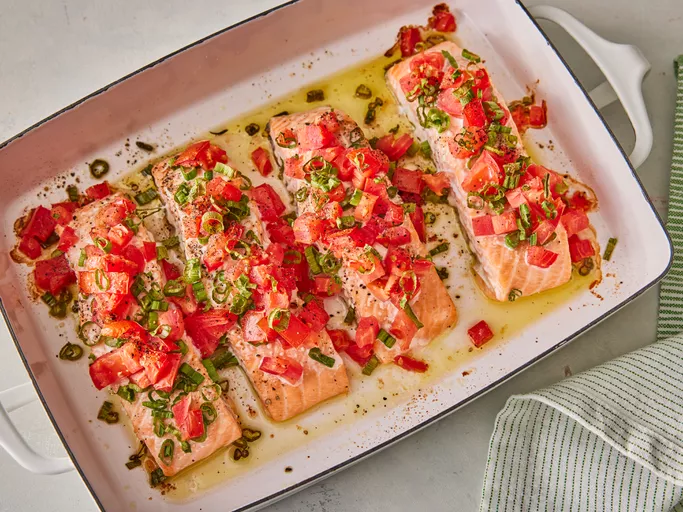

Best Salmon Bake

Quick and Delicious Salmon Bake Recipe
Indulge in the simplicity and flavor of our Quick and Delicious Salmon
Bake Recipe. With just a few ingredients and a short cooking time, you can
enjoy a restaurant-quality meal in the comfort of your own home. Fresh
salmon fillets are topped with a colorful mix of chopped tomatoes and
green onions, then baked to perfection in the oven. The result is a
tender, flaky fish that's bursting with flavor and sure to become a new
family favorite.
Ingredients
- 1 (1 pound) salmon fillet, halved
- 1 small tomato, chopped
- 5 green onions, chopped
- 1/4 teaspoon salt
- 1/4 teaspoon pepper/li>
Steps
- Gather all ingredients.
- Preheat the oven to 350 degrees F (175 degrees C).
-
Place salmon on a lightly oiled sheet pan or in a shallow baking dish,
folding under thin outer edges of fillets for even cooking.
-
Top salmon with chopped tomatoes and green onions, and season with salt
and pepper.
-
Cook salmon in the preheated oven, uncovered, until fish flakes easily
with a fork, about 20 minutes.
Home